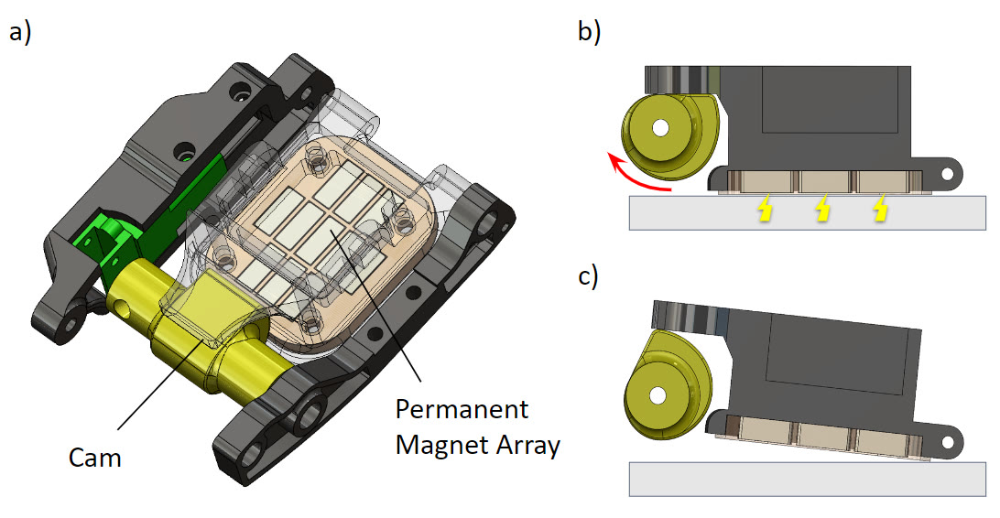

Mechanisms & devices · 2023–2024
EEWOC: Extended-reach Enhanced Wheeled Orb for Climbing
A lightweight climbing robot with an extending limb and switchable magnetic grippers for steel structures.
Overview
EEWOC combines a long-reach, extendable and bendable tape-spring limb with magnetic grippers to move across steel structures. The limb places its grippers beyond the robot’s body and around obstacles, corners, and ledges, while wheels provide mobility on horizontal surfaces.
The platform investigates a compact approach to climbing: use reach and switchable attachment mechanisms to navigate surface features without the mass and complexity of many conventional limbed robots.
Magnetic gripper design
My contribution
I designed the magnetic grippers, focusing on a mechanically robust attachment mechanism with predictable engagement and release. A rotating cam switches each gripper between two states.
In the attached state, the cam presses the magnets flush against the steel surface to provide holding force. To release, the cam produces a controlled peeling motion that separates the magnets from the surface. This mechanical switching enables repeatable detachment without explicit force control.

Gripper performance
The original project demonstrations report the following specifications for the gripper and climbing setup.
- 0.7 seconds per attachment or detachment cycle.
- 2.1 kg supported load, corresponding to the full robot weight reported in the project material.
- Operation on surfaces up to 90 degrees, including vertical climbing.